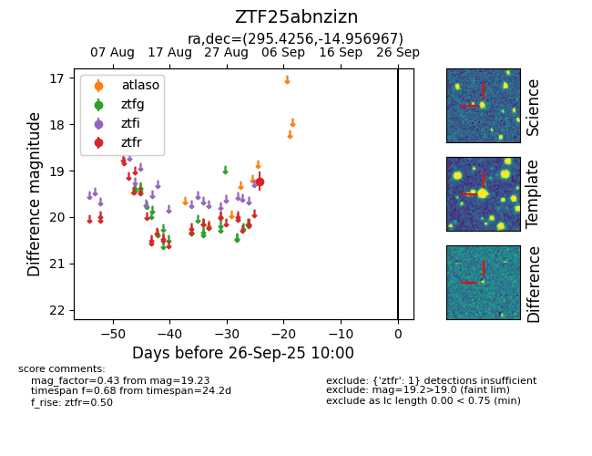

FINK: ZTF25abnzizn
Lasair: ZTF25abnzizn
ALeRCE: ZTF25abnzizn
ZTF25abnzizn (ztf,fink)
equatorial (ra, dec) = (295.4256,-14.95697)
galactic (l, b) = (24.8528,-17.74356)

last ztfr=19.23
1 ztfr detections